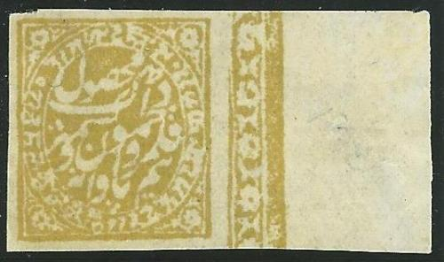
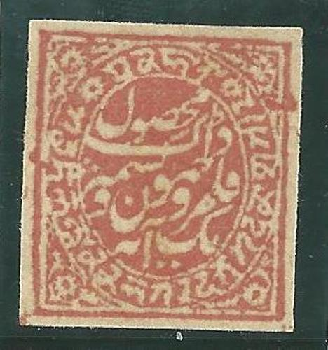
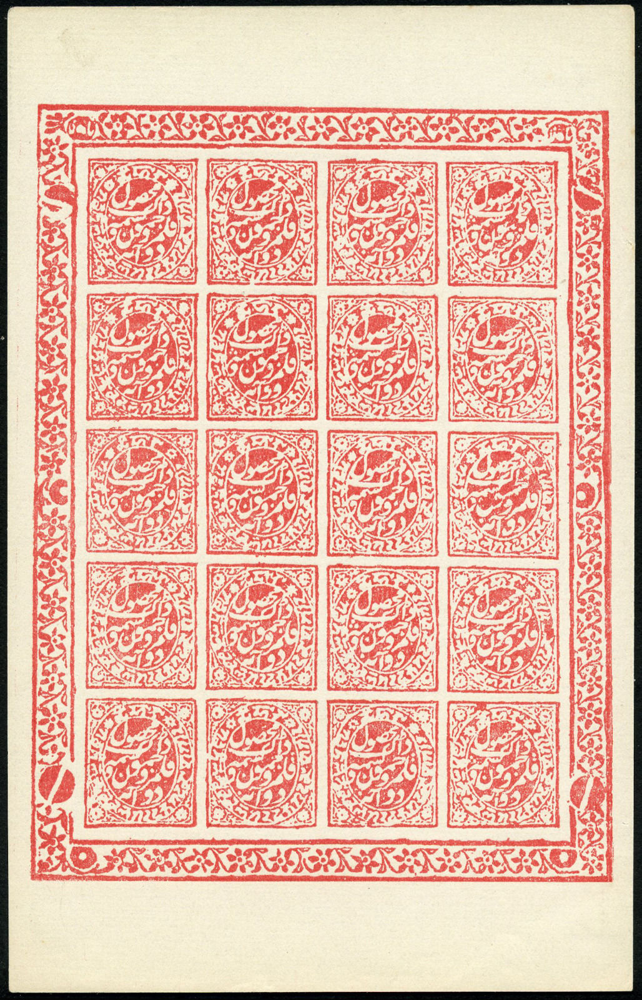
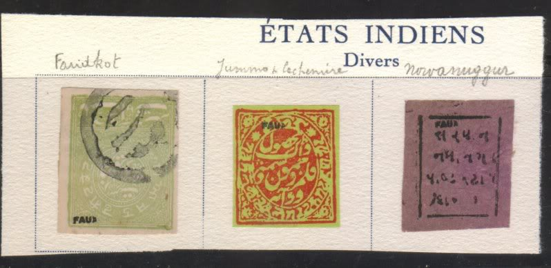
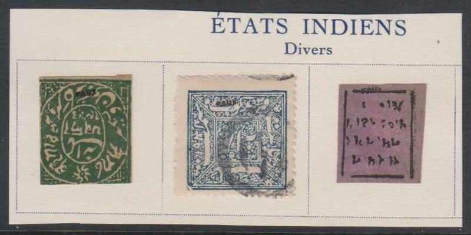
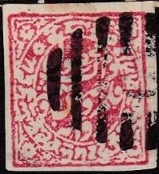
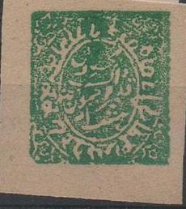
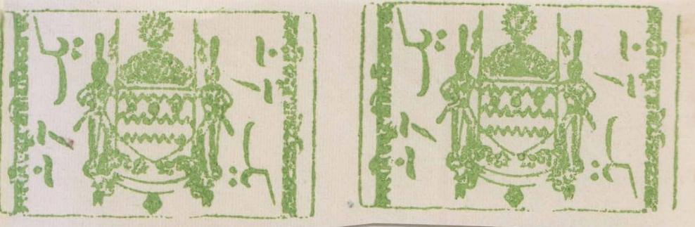

{kind=link}

1/4 a red, 1/4 brown and 1/4 a black
Jammu and Cashmir - Jummo et Cachemire
Return To Catalogue - India - Jammu and Kashmir (India), circular issues - Jammu and Kashmir 1866, 'old rectangular' issues
Note: on my website many of the
pictures can not be seen! They are of course present in the
catalogue;
contact me if you want to purchase it.
Many forgeries exist: see http://www.kashmirstamps.com/index.html.
For Jammu and Kashmir (India), circular issues, click here or Jammu and Kashmir 1866, 'old rectangular' issues, click here.

1/8 a yellow
1/4 a red, 1/4 brown and 1/4 a black
1/2 a red and 1/2 a blue

1 anna red and 1 anna green
2 annas violet, 2 a red, 2 a red on green and 2 a black.
(Reduced sizes)
1/8 a yellow (1883) 1/4 a red 1/4 a blue 1/4 a brown (1883) 1/4 a black (official stamp) 1/2 a blue (1880) 1/2 a red 1/2 a orange (1883) 1/2 a black (official stamp) 1 a violet 1 a red 1 a green (1883) 1 a black (official stamp) 2 a violet 2 a blue 2 a red 2 a red on yellow/green (1883) 2 a black (official stamp) Design with pearls at the border (1878)
4 a green sheetlet of 8 stamps. The 'perforations' are actually
printed. '
Sheet of 8 anna official stamps.
4 a red 4 a green (1883) 4 a black (official stamp) 8 a red 8 a black (official stamp) 8 a blue (1883)
Typical "L" in an ellipse (or circle) cancel, "REG
LAHORE" and "KASHMIR" cancels
Three ring cancel from "JAMMU", other cities also had a
similar cancel.
Stamp with Srinagar "L" bar cancel.
Sheet of stamps, note the places to hold the nails in the
sideborders.

A sheet with Brighton forgeries, made by Treherne.
Forgery sold by the forger Fournier
(left image reduced size); image found in a 'Fournier Album'




Very dubious item, most likely a forgery. The little circle at 2
o'clock should not touch the other characters. A similar item is
listed at http://www.kashmirstamps.com/FKash.html.
Dubious item, a similar item is listed at
http://www.kashmirstamps.com/FKash.html
I've often seen stamps with very clear cancels, they might be
some kind of reprints or cancelled to order.
Sheetlet with 8 a postal forgeries, used to deceive the post
office.
Another postal forgery.
Coloured 1 a green 2 a brown 4 a blue 8 a yellow 1 R red 2 R green 5 R brown 10 R red 25 R violet Black (for official use) 1 a black 2 a black 4 a black 8 a black 1 R black 2 R black 5 R black 10 R black 25 R black
Forgeries on brownish paper exist.

Modern forgeries made in the 1980's
More telegraph stamps were issued in 1903 (consisting of two parts; used stamps are always cut into half); 1/2 a, 1 a, 2 a, 4 a, 8 a, 1 R, 2 R and 5 R. Also several surcharges exist (1/2 a on 1 a, 2 a on 2 R, 4 a on 2 R, 4 a on 5 R and 8 a on 5 R):
Reduced size
From 1894 on the stamps of India were used in Jammu and Cashmir.
'The Stamps of Jammu & Kashmir' by Frits Staal, 1983 (286 pages); covers history, stamps, postal stationary, essays, proofs, reprints and forgeries, telegraphs, fiscals and postmarks. I haven't read this book myself.
Stamps - Timbres-Poste - Briefmarken
{kind=link}
{kind=link}
{kind=link}
{kind=link}
{kind=link}